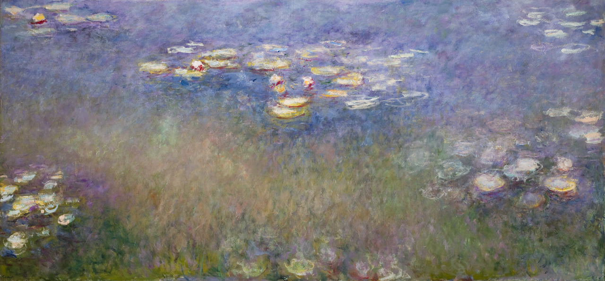

Discover Monet
Czy można ładnie i ciekawie prezentować sztukę? Okazuje się, że można.
Amerykańskie Saint Louis Art Museum udostępniło niedawno arcyciekawy zbiór materiałów edukacyjnych, poświęcony prawdziwej perełce swej kolekcji — „Nenufarom” Claude’a Moneta.